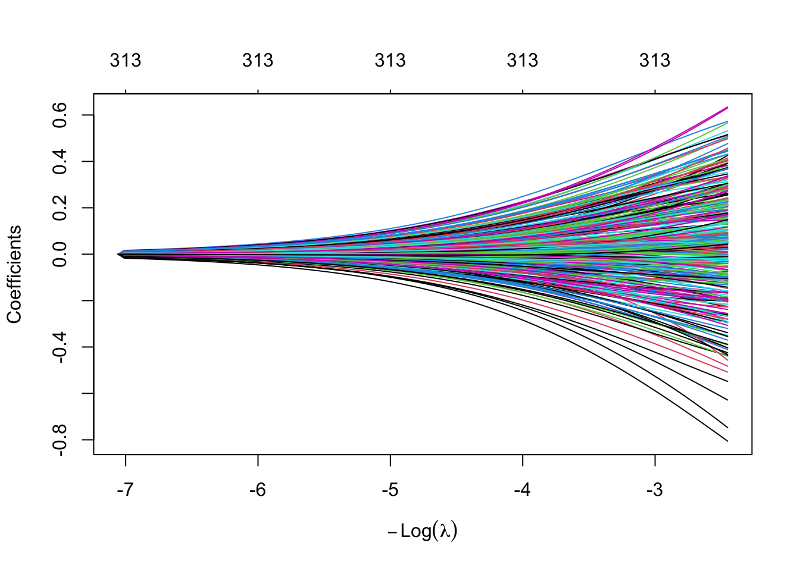

(Remember: the extra \(1/2\) factors here don’t really make a difference when we’re only interested in the minimizer and they make doing ‘calculus things’ a bit cleaner: \(\frac{d}{dx}\frac{x^2}{2} = x\).)
This was an extension to our basic ERM principle: we don’t just match the training data as well as we can (OLS would dominate on that task) but we do so while keeping our set of \(\bbeta\) coefficients from getting too big. Our goal is not ‘small coefficients’ per se, but small coefficients lead to better generalizability (out of sample performance):
Our model is less sensitive to inputs at both the fitting and prediction stage.
At fitting, we keep out values from getting too big, so the influence from any single observation is reduced. (Compare to ‘normal’ regression where one observation can have essentially unbounded influence / leverage.)
At prediction, if our coefficients are smaller, a change to one of the input \(x_i\) gives a smaller change in the output \(\hat{y}\)
Due to the statistical ‘magic’ of shrinkage, at least a little bit of ridge penalization always helps. (In practice, our theory only holds for ‘infinitely small’ shrinkage, but we find that an appropriately CV-tuned \(\lambda\) is often not that small.)
We motivated this idea from the intuition that it is impossible for all features to be super important (the chaotic piranha principle), but this wasn’t actually mathematically necessary. (I personally believe it is an important aspect of ridge’s practical successes.)
Let’s take a closer look at what that ridge solution actually looks like. A little bit of matrix calculus (which you aren’t required to reproduce) tells us that the solution looks like:
If you recall your formulas for simple (univariate regression), the OLS slope is given by something like \[SS_{XY}/SS_{XX}\] and the matrix form above just generalizes this to multiple features. Here \(\bX^{\top}\bX\) plays the role of \(SS_{XX}\) and \(\bX^{\top}\by\) and \(\bX^{\top}\by\) plays the role of \(SS_{XY}\). (We can’t ‘divide’ by matrices, but it’s fine to multiply by the inverse of \(\bX^{\top}\bX\); essentially, if we couldn’t divide by 3, we can multiply by \(1/3\) to get to the same end result.)
Extrapolating this analogy: the ridge solution looks something like: \(SS_{XY}/(SS_{XX} + \lambda)\). That is, we grow the denominator by \(\lambda\) and effectively ‘shrink’ the OLS solution closer to zero.1
In this form, we see that the \(\lambda \to 0\) limit gets us back to OLS, while the \(\lambda \to \infty\) limit pushes us all the way back down to zero.
Understanding Check: How does this relate to the behavior of \(\tau\) in the constraint form?
We see something else a bit magical about ridge regression here: because of the \(+\lambda\) term in the denominator, we avoid any division by zero problems. (Recall that \(\lambda\) is a price and is always positive.)
This is actually pretty magical and it means we can fit ridge regression even in the ‘wide’ data setting where \(p > n\)! Hence, even if we have more measurements than samples, we can fit something ‘OLS-like’. Of course, it isn’t “true” OLS since we have the ridge penalty, but if \(\lambda\) isn’t too big, it’s basically the same thing.
This is incredibly important in fields where getting additional measurements (\(p\)) is cost effective, but getting additional samples (\(n\)) is expensive. Think medical trials, consumer tracking, weather and climate monitoring (after you’ve bought and installed your weather monitor, letting it run for a longer period is cheap; buying a new one and paying someone to install it is expensive) and many more.
So what does a ridge regression solution actually look like in that situation?
# Generated with help of Geminilibrary(readr)library(dplyr)library(stringr)library(tidytext)library(tidyr)library(glmnet)# 1. Ingest static TidyTuesday snapshotraw_wine<-read_csv("https://raw.githubusercontent.com/rfordatascience/tidytuesday/main/data/2019/2019-05-28/winemag-data-130k-v2.csv", show_col_types =FALSE)# 2. Subsample to create a controlled p > n setting (n = 100)set.seed(3106)wine_sample<-raw_wine|>filter(variety=="Pinot Noir", !is.na(points), !is.na(description))|>slice_sample(n =100)|>mutate(wine_id =row_number())|>select(wine_id, points, description)# 3. Tokenize, strip stopwords/digits, and prune singletonstidy_words<-wine_sample|>unnest_tokens(word, description)|>anti_join(stop_words, by ="word")|>filter(!str_detect(word, "^[0-9]+$"))frequent_words<-tidy_words|>distinct(wine_id, word)|>count(word)|>filter(n>=2)# 4. Reshape to wide DTM via pivot_wider()dtm<-tidy_words|>semi_join(frequent_words, by ="word")|>count(wine_id, word)|>pivot_wider( names_from =word, values_from =n, values_fill =0)# 5. Build design matrix X and continuous target yaligned<-wine_sample|>select(wine_id, points)|>inner_join(dtm, by ="wine_id")X<-aligned|>select(-wine_id, -points)|>as.matrix()y<-aligned$pointsdim(X)
[1] 100 313
Here we have a data set with \(n = 100\) rows corresponding to reviews of different bottles of wine and \(p > n\) words used within those reviews. Our outcome \(Y\) is the rating (on a 0-100 scale) given to each bottle.
The glmnet package will let us fit ridge regression easily:
library(glmnet)# alpha = 0 <=> ridge. Hold on for alpha = 1!glmnet(X, y, lambda=1, alpha=0)|>coef()
You can make \(\lambda\) even bigger, but you won’t see many exact zeros.
It turns out to be helpful to look at many \(\lambda\) at once and smart algorithms make this not too slow. The glmnet package can do this for us:
ridge_model<-glmnet(X, y, alpha=0)plot(ridge_model)

Here, we have a so-called regularization plot. Each line is the coefficient associated with one variable. As \(\lambda \to \infty\), we see all the variables get pushed towards zero, but never actually get there. Given our rough \[SS_{XY}/(SS_{XX} + \lambda)\] intition, this shouldn’t surprise us. A function like \(3/(x + 2)\) gets very close to zero as \(x\) grows, but we have to go ‘all the way to infinity’ to actually get an exact zero. In fact, if you look at the plot above, it has that same sort of ‘asymptotic towards zero’ behavior. (Note that we’re looking at \(-\log \lambda\) so the axis might be flipped from your intuition.)
Does this matter? If we’re only interested in making good predictions, not really. The amount of shrinkage to get things all the way to zero would be enough to screw up our predictive accuracy (over-shrinkage) and for many circumstances it’s totally fine to use all of our features.
Scientifically, this can be a bit more problematic. We often use OLS not just as a pure predictive black box, but as a tool to understand what features matter and don’t matter in our data. Ridge regression using a little bit of everything ‘muddles’ the picture and doesn’t give us insight into what really matters.2
Instead, we may want a model that explicitly only uses a few features. Sometimes, this may be something we really believe, but more often, it’s a sort of ‘simplification for the sake of interpretation.’
As an aside, glmnet() can also help us perform CV to pick a strong \(\lambda\):
We’ll talk more about the finer points of CV for ridge in a later class.
Sparsity
Models which use only a small subset of the potential inputs are called sparse models and you have likely used some version of them previously, if subtly. You may have fit a linear model and used some sort of iterative procedure to decide which features to add (forward stepwise?) or remove (backward stepwise?). The final model you settled on was not obviously sparse, but you were effectively ‘zero-ing out’ all of the features you chose not to include.
When is this useful?
If you think that only a few features are genuinely relevant and most are truly zero (‘true sparsity’), obviously fitting a sparse model makes sense. It’s hard to think of too many situations where this is likely to actually be the case.
If you think that only a few features are important and most are near zero, the practical benefits of zeroing out the ‘near zeros’ may be worth it. These benefits might include:
Interpretation
A bias-variance gambit
Measurement cost. If we’re deploying an ML system, it may be expensive to measure everything and if a model does 99% per as well at 1% of the data collection cost, it might be worth it.
Computational performance. In very high-performance settings, looking up and computing with many features is slower than only using a few.
How do we quantify sparsity? Recall that last time, we used the \(\ell_p\) norms to measure bigness. Using a calculus-y limiting sort of argument, we can argue the \(\ell_0\) norm can be used to count the number of non-zero elements in a vector.
As we can see, this is quickly converging to the value of 5, for 5 non-zero elements. (You can play around with this example and see it holds generally.)
So we sometimes define\(\|\bx\|_0\) as the number of non-zero entries in a vector \(\bx\). This isn’t a real norm (\(\sqrt[0]{x}\) isn’t really a thing…) but it’s convenient so we’ll use this.
In this set-up, many of the sparse regression methods you have seen in the past can be written as:
Here, as with ridge regression, \(\lambda\) is a ‘cost’ associated with \(\beta\). But, in ridge regression, we paid a continuous ‘cost’ for making \(\beta\) a bit bigger; here we only pay a cost for adding a new variable. Once it’s included, we don’t penalize the specific value.
The interpretation of \(\lambda\) here is maybe even more natural than in ridge regression: it’s the ‘value add’ a variable has to add to be included. Specifically, if adding a variable reduces the MSE by more than \(\lambda\) it is worth it; otherwise, the variable gets left out. (Make sure you can see this!)
All the rules for model inclusion you have seen before: \(p\)-values, ANOVAs, \(R^2\) differences, \(F\)-tests, etc. are just different rules for picking a good \(\lambda\).
So that’s awesome! As before, we can’t just pick \(\lambda\) to minimize training error (or we’ll push \(\lambda \to 0\), include all variables, and recover OLS our ‘training-error maximalist’), so we need to use CV but otherwise we’re good. Right?
Sadly not quite. The above problem is lovely in theory, but actually quite hard to compute in practice. That \(\|\bx\|_0\) term is really ‘jumpy’ and doesn’t play nicely with our gradient descent algorithms. Applied math folks have fancy algorithms to solve it, but they require expensive software and computers and still fail around \(p \approx 1000\), which isn’t that many features. (In our wine example, where each word was a feature, it’s easy to see how you could get more than 1,000 features.)
So we cheat. Or, as the mathematicians would say, we ‘relax the problem.’ Instead of solving the optimal, but impossible, problem, we solve a closely related, simpler problem, and hope that it’s good enough.3 Specifically, what if we don’t use \(\ell_0\) but instead use some other \(\ell_{p \approximately 0}\). Let’s look at this graphically.
Notice how the \(p=0\) path has a hard jump at 0 from \(|0.0000001|^0 = 1\) but \(0^0=0\). (Not all software uses this rule; but remember we’re using the zero power to count non-zeros.)
Footnotes
This is exactly true in the case where our features have no correlation. In practice, recall that the vast majority of ‘big \(p\)’ problems occur because we have a bulk measurement technology and most of those measurements are highly correlated. (Think of having temperature sensors all over a city or doing genetic processing on a patient’s entire genome.)↩︎
You might argue that we’re looking at the wrong end of the plot (\(\lambda \to \infty\)) and that it’s better to look at a more reasonable \(\lambda\) where our predictions are accurate and to just pick the biggest coefficients there. This is an entirely defensible point-of-view.↩︎
When we can’t give an exact answer to the exact problem we want to solve, we can either give an approximate answer to the exact problem or an exact answer to the approximate problem. In this section, we’re taking the later route as it has been more successful and influential in ML; but there’s a long and proud history of giving a nearly-optimal approximate solution as well. Neither universally dominates the other.↩︎